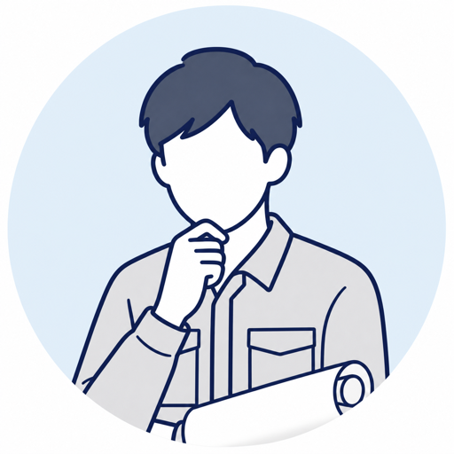
改良設計ばかりで、ゼロから設計する機会がない。このまま市場価値は上がるのだろうか。
28歳・機械設計メーカー特化型の転職エージェント
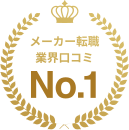
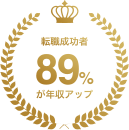
※Googleビジネスプロフィールの口コミ評価4.9・600件以上（2026年7月時点）。年収UP率は転職成功者、短期離職率は入社者を対象とした当社集計。バッジ文言は公開前に正式な実績内容へ差し替えてください。

改良設計ばかりで、ゼロから設計する機会がない。このまま市場価値は上がるのだろうか。
28歳・機械設計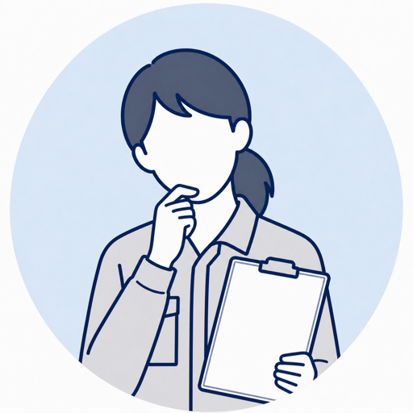
設備導入や工程改善で成果を出しても、評価も年収も変わらない。経験に見合っているのだろうか。
31歳・生産技術問い合わせと運用保守で毎日が終わる。企画やDXへ進みたいのに、上流経験を積む機会がない。
34歳・社内SE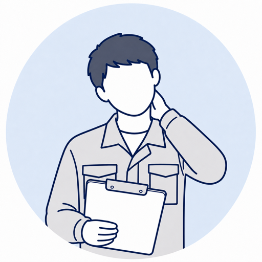
品質対応に追われる毎日を変えたい。でも求人票だけでは、組織体制や本当の残業時間まで見えない。
33歳・品質保証経験を正しく捉え、企業の実情まで確かめる。
納得できる一社をご提案します。
担当製品や技術要素、工程、改善成果まで棚卸し。経験年数だけでは伝わらない強みを言語化します。
産業機械の機械設計を7年間担当。主に既存製品の改良設計に従事。
3D CADによる駆動部の詳細設計から試作評価、量産立ち上げまで担当。部品共通化を主導し、原価を12%削減。
募集背景、配属先の体制、任される業務、働き方の実情まで企業へ確認。入社後のギャップを減らします。
年収、勤務地、働き方、仕事内容。希望をそのまま検索条件にするのではなく、転職で変えたいことと守りたいことを整理します。判断軸を揃え、納得できる選択肢だけをご提案します。
この判断軸をもとに、合う求人だけをご提案
転職を決める前でも大丈夫です。
まずは、経験から選べる可能性を確認しませんか。
マッチング精度や選考成果を評価され、
メーカー各社のエージェントアワードを受賞しています。
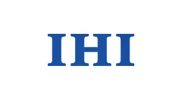
IHI AGENT AWARD 2024
経歴や志向を踏まえたマッチング精度と、選考成果が評価されました。
HITACHI AGENT AWARD 2025
求人要件とキャリア志向を結びつける、精度の高い提案力が評価されました。
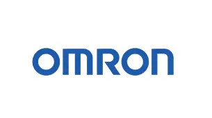
OMRON / 2023年度
キャリア採用への貢献と、応募者の高い選考通過率が評価されました。
※各社が主催するキャリア採用領域のエージェントアワードにおける受賞実績です。
職種を選ぶと求人例が切り替わります。
非公開求人を含め、条件に合わせて個別にご案内します。
※求人内容は一例です。募集状況やご経験によりご紹介可能な求人は異なります。
年収・働き方・仕事内容。
何をどう変えたか、実際の事例でご覧ください。
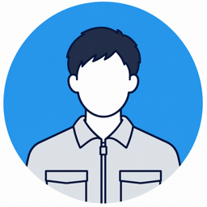
28歳・機械設計（産業機械）→ EV部品メーカーへ
転職者の声★★★★★「改良設計の経験を、量産性まで考えられる強みとして評価してもらえました。念願だった新規開発に挑戦できています。」
31歳・生産技術（自動車部品）→ 完成車メーカーへ
転職者の声★★★★★「設備導入と改善の実績を具体化したことで、より上流の設備企画へ進めました。」
29歳・電気設計（装置メーカー）→ 半導体製造装置メーカーへ
転職者の声★★★★★「回路設計だけでなく、立ち上げ時の調整経験まで評価され、技術領域を広げられました。」
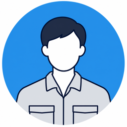
33歳・品質保証（電子部品）→ 医療機器メーカーへ
転職者の声★★★★★「監査対応や再発防止の経験を活かし、品質の仕組みづくりに携われるようになりました。」
30歳・調達（機械部品）→ 大手重工メーカーへ
転職者の声★★★★★「価格交渉だけでなく、供給リスクを抑えた実績が評価され、より大きな調達戦略を任されています。」
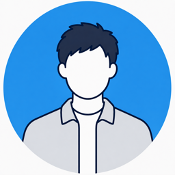
34歳・SE（SIer）→ メーカー社内SEへ
転職者の声★★★★★「働き方を変えるなら年収は下がると思い込んでいました。両方かなえる求人を条件から逆算してくれました。」
似た経験から、どんな転職ができるのか。
あなたの場合の選択肢を個別にご案内します。
転職時期が未定でも、相談できます。
転職を無理に勧めることはありません。
条件整理から書類・面接対策、年収交渉まで最短ルートで伴走します。
今の会社に残る選択肢も含めて、キャリアの棚卸しからお手伝いします。
いま動いたら何が選べるのか。相場観と選択肢だけ知って帰れます。
メーカーの現場、技術、採用を知る担当者が、
企業選びから書類・面接対策まで一貫して支援します。
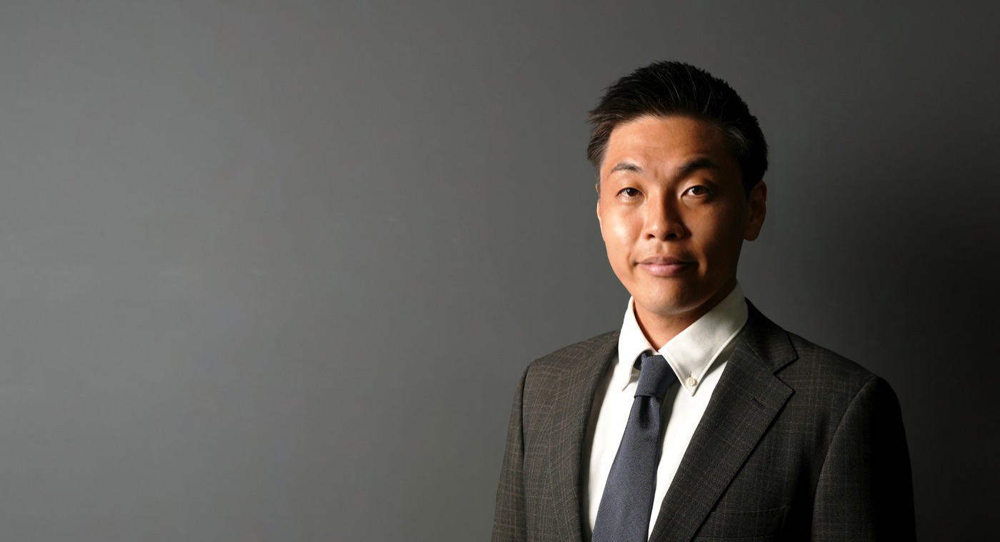
転職ありきではなく、
現職に残る選択も含めて
最善を考えます。
大手・優良メーカーの技術職
メーカーの技術系ポジションを中心に支援。機械工学の知識と営業・採用経験を活かし、企業側の採用意図と求職者の本音をつなぎます。
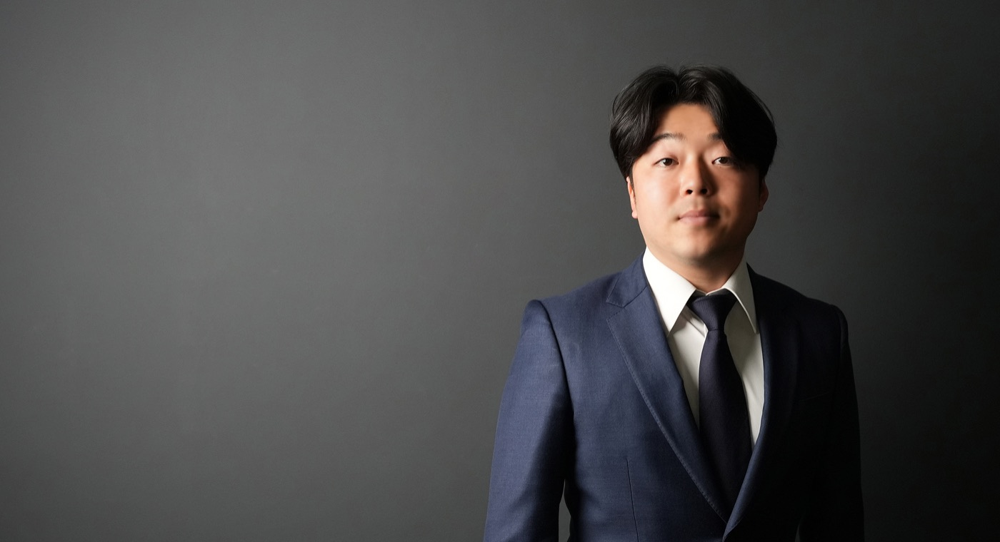
転職をゴールにせず、
その先のキャリアが好転する
選択を支援します。
メーカー・IT領域の技術職
電気・機械・組込みから、化学・素材・食品まで幅広い技術職を担当。プロサッカー選手・選手会長として培った行動力と責任感で伴走します。
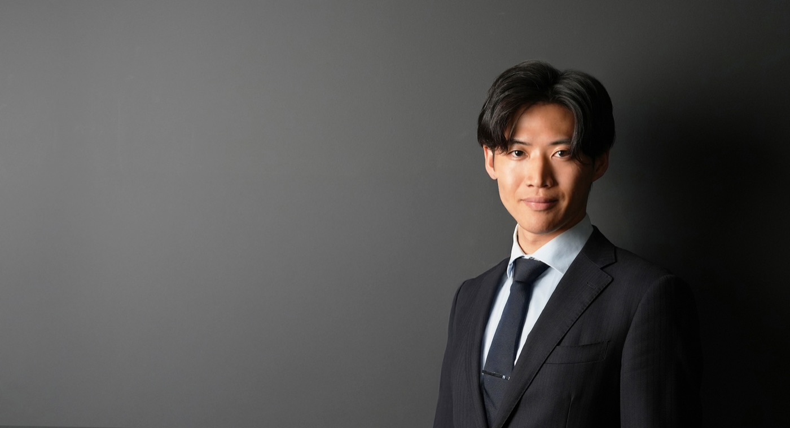
企業との
マッチ度にこだわり、
後悔しないキャリア選択を
支えます。
大手メーカー・生産技術領域
大手メーカーの生産部門で、製造設備の開発・管理とプロジェクトリードを経験。現場を知る元エンジニアならではの視点で提案します。
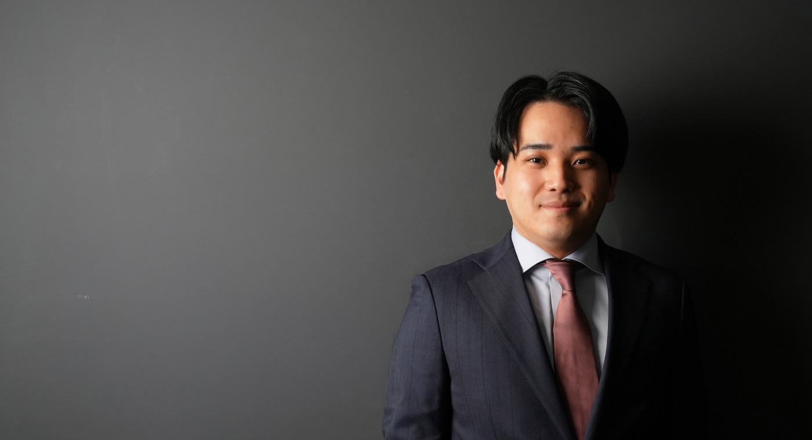
求人票だけでは
分からない情報まで届け、
専門性が活きる
環境を一緒に探します。
機械設計・生産技術・医療機器
医療機器メーカーで設計・組立・評価など製品開発を経験。技術職の複雑な経歴を要素分解し、書類や面接で伝わる強みへ整理します。
登録から内定まで、すべて無料。
書類作成や企業との日程調整も担当者が代行します。
フォーム入力は約60秒。今すぐ転職しなくても大丈夫です。
所要 約60秒平日夜・土曜、オンラインもOK。譲れない条件を一緒に整理します。
約60分・オンライン可働き方の実態を確認した求人だけを、理由つきでご案内します。
条件に合う求人のみ職務経歴書は一緒に作成。企業ごとに面接の想定問答を準備します。
日程調整も代行年収交渉、退職の進め方、入社後のフォローまで支援します。
年収交渉も担当登録後は、担当者が日程調整から選考対策まで伴走します。
無料相談を申し込む ›完全無料です。採用企業から紹介料をいただく仕組みのため、求職者の方に費用が発生することは一切ありません。
機械・電気電子・生産技術・品質・生産管理・調達・社内SEなど、メーカーの技術職と専門職を中心にご相談いただけます。
職務経歴書が完成していなくても問題ありません。これまで担当した製品・工程・技術や、今後変えたい条件を分かる範囲でお聞かせください。
可能です。評価・解析から設計へ、受託SEからメーカー社内SEへなど、近い経験を活かしたキャリアチェンジも支援しています。
ご希望の連絡手段と時間帯を最初に伺い、それ以外の連絡はしません。今回は見送るとお伝えいただければ、ご案内も止めます。
転職を決めていなくても構いません。
いまの経験で選べる求人と、年収・働き方の可能性を、
一度いっしょに整理しませんか。